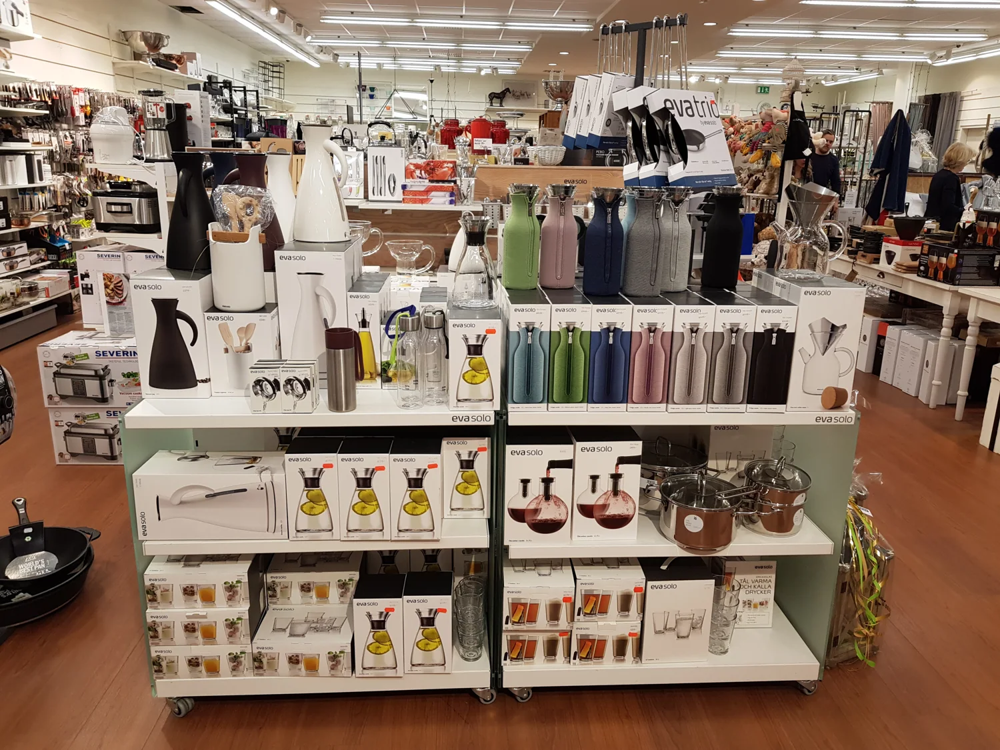
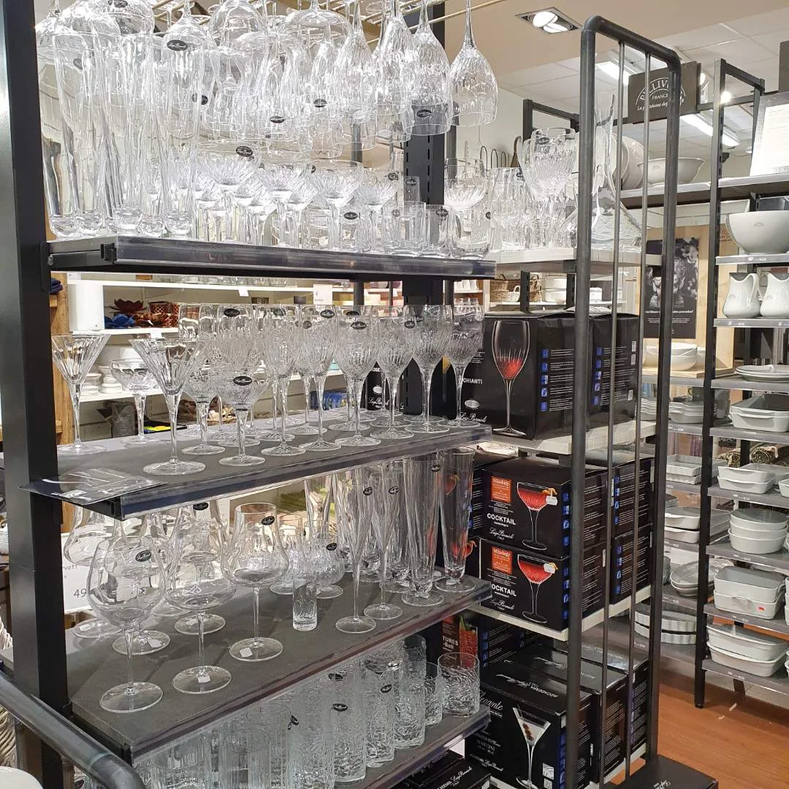

En lokal butik.
En stor kärlek till hemmet.
Vi tror på saker som är fina att se på, sköna att använda och värda att leva med.

Det började med textilier.
Nybäddat öppnade 2008. Då låg tyngdpunkten på textilier och bäddprodukter – och därifrån kommer namnet. Sedan dess har butiken vuxit tillsammans med intresset för hela hemmet.
År 2010 flyttade butiken in i gallerian. Fyra år senare blev ytan större igen, med mer plats för kök, matlagning, dukning och inredning.
I dag möter du ett brett sortiment där funktion och form får ta lika stor plats. Från redskapen till vardagens middag till presenten som får någon att le.


Se. Känn. Fråga.
Det finns saker en skärm inte kan berätta.
Hur ett glas känns i handen. Hur en färg möter ljuset.
Kom in, så hjälper vi dig att hitta rätt.